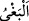
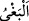

14. Onlar kendilerine ilim geldikten sonra, sadece aralarındaki çekememezlik
yüzünden ayrılığa düştüler. Eğer belli bir süreye kadar Rabbinden bir (erteleme)
sözü geçmiş olmasaydı, aralarında hemen hüküm verilirdi. Onlardan sonra kitaba
vâris kılınanlar da onun hakkında derin bir şüphe içindedirler.
“Onlar” yahudiler ve hristiyanlar dâvet edildikleri İslâm dîninde ayrılığa düşmediler.
Yine bazılarının yaptığı gibi sadece hallerden bir halde veya vakitlerden bir vakitte
îman etmediler. Yani birlikleri ve îmanları hem sağlam hem de devamlıydı. Ancak
“kendilerine ilim geldikten sonra”; kendilerine ilim gelme hâlinde veya kendi
kitaplarında bulunduğu üzere Rasûlullah (s.a.)’in ve Kur’an’ın doğruluğuna dâir
delilleri müşâhede vaktinde yahut onun peygamber olarak gönderildiğini bilme vaktinde
“sadece aralarındaki çekememezlik” dünyayı, dünya mülkünü, dünya hükümranlığını
arzu etmeleri sebebiyle ve mevki, makam, şöhret talebi, câhiliye öfkesi ve gayreti
“yüzünden ayrılığa düştüler.” Yoksa peygamberin ve getirdiği mesajın doğruluğu
husûsunda bir şüpheleri olduğu için değil...
Âyette geçen “ /beğa” kelimesi “istedi” mânâsındadır. “/bağy” kelimsenin asıl
/beğa” kelimesi “istedi” mânâsındadır. “/bağy” kelimsenin asıl
mânâsı ise haksız yere büyüklenmek demektir. Müfredat’da böyle geçmektedir.
“Eğer belli bir süreye” Allah katında mâlum bir vakte “kadar” -ki bu kıyâmet günü
yahut onların takdir edilen ömürlerinin sonudur- “Rabbinden” azâbın geciktirileceğine
dâir “bir (erteleme) sözü geçmiş olmasaydı, aralarında hemen hüküm verilirdi.”
Köklerinin kesilip nesillerinin yok edilmesine dâir hüküm verilirdi ki işledikleri
cinâyet de zaten kesin olarak bunu gerektirmektedir.
“Onlardan” kitap ehline kitabı verildikten “sonra kitaba” Kur’an’a “vâris
kılınanlar da” kendilerine Kur’an verilen müşrikler de “onun” Kur’an “hakkında
derin bir şüphe içindedirler.”
“/şek” zıd olan iki şeyin insan nezdinde eşit olmasıdır. “/mürîb”, tereddüt ve
şüpheye düşürücü demektir. İşte bundan dolayı, Kur’an’ın gerçekliğini bildikten sonra,
yalnız azgınlıkları ve kibredip büyüklük tasladıkları için îman etmediler. Müşriklerin bu
durumu diğer iki kitap ehli olan yahûdî ve hristiyanların durumu gibidir ki bu nefsin
tereddüd ve endişeleridir. Buna rayb/şüphe denir. Çünkü şüphe, nefsi endişeye
sevkedip gönül huzûrunu da ortadan kaldırır.
Şekk’i mürîb ile vasıflamak, şüphe etmede mübâlağa anlamınadır. Kamus’ta geçtiği
üzere “iş şüpheli oldu” demektir.